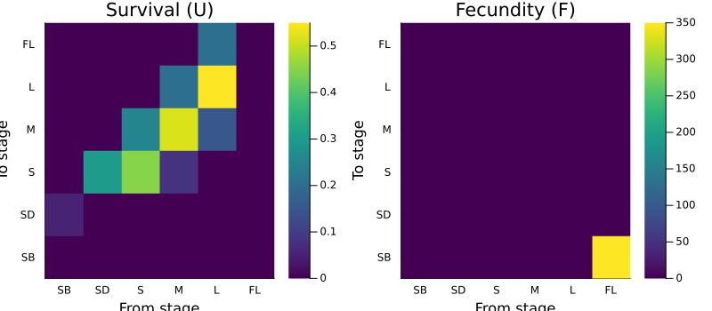
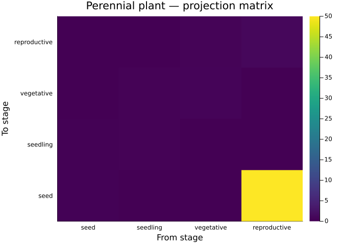

Valued Projection Nets
Simon Frost
Overview
A LabelledProjectionNet captures the topology of a population model — which demographic processes connect which state variables — but carries no numeric data. A ValuedProjectionNet extends this by associating sparse numeric entries with each transition, following the pattern of AlgebraicPetri.jl’s LabelledReactionNet (which bundles structure with reaction rates).
This vignette shows how to construct valued projection nets from sparse transition specifications, materialize them to matrices, and lower them to concrete MatrixProjectionModel objects for analysis.
Setup
using CategoricalPopulationDynamics
import MatrixProjectionModels
using Catlab
using Catlab.CategoricalAlgebra
using LinearAlgebra
using StructuredPopulationCore: lambda
using Plots
const MPM = MatrixProjectionModelsPrecompiling packages...
2941.0 ms ✓ ArrayInterface
663.8 ms ✓ ArrayInterface → ArrayInterfaceStaticArraysCoreExt
833.8 ms ✓ ArrayInterface → ArrayInterfaceGPUArraysCoreExt
899.9 ms ✓ ArrayInterface → ArrayInterfaceSparseArraysExt
1056.7 ms ✓ PreallocationTools
1307.6 ms ✓ SciMLStructures
2079.1 ms ✓ SciMLOperators
1774.7 ms ✓ SymbolicIndexingInterface
698.7 ms ✓ SciMLOperators → SciMLOperatorsStaticArraysCoreExt
861.3 ms ✓ SciMLOperators → SciMLOperatorsSparseArraysExt
4909.2 ms ✓ Plots → FileIOExt
3337.3 ms ✓ RecursiveArrayTools
1117.0 ms ✓ RecursiveArrayTools → RecursiveArrayToolsSparseArraysExt
1186.9 ms ✓ RecursiveArrayTools → RecursiveArrayToolsStatisticsExt
9285.2 ms ✓ SciMLBase
3210.2 ms ✓ SciMLBase → SciMLBaseDistributionsExt
3497.3 ms ✓ MatrixProjectionModels
17 dependencies successfully precompiled in 35 seconds. 239 already precompiled.
Precompiling packages...
701.5 ms ✓ SymbolicIndexingInterface → SymbolicIndexingInterfacePrettyTablesExt
1 dependency successfully precompiled in 2 seconds. 40 already precompiled.
Precompiling packages...
538.6 ms ✓ RecursiveArrayTools → RecursiveArrayToolsTablesExt
1 dependency successfully precompiled in 1 seconds. 36 already precompiled.
Precompiling packages...
1118.6 ms ✓ SciMLBase → SciMLBaseMLStyleExt
1 dependency successfully precompiled in 2 seconds. 58 already precompiled.
Precompiling packages...
2760.6 ms ✓ IntegralProjectionModels
5905.0 ms ✓ IntegralProjectionModels → IntegralProjectionModelsCatlabExt
3794.1 ms ✓ CategoricalPopulationDynamics → CategoricalPopulationDynamicsIPMExt
3800.8 ms ✓ CategoricalPopulationDynamics → CategoricalPopulationDynamicsMPMExt
4 dependencies successfully precompiled in 21 seconds. 292 already precompiled.
MatrixProjectionModelsMotivation: From Life Cycle Graphs to Models
Ecologists describe population dynamics as life cycle graphs — directed graphs where nodes are stages and edges are demographic transitions with associated rates or probabilities. A valued projection net captures exactly this information:
- Stage names: the nodes (e.g., seed, seedling, adult)
- Transitions: named demographic processes (e.g., survival, fecundity)
- Sparse entries: the nonzero
(from => to) => valueentries for each transition
This is more structured than a raw matrix: transitions are named and grouped, so you can extract or modify individual processes.
Constructing a ValuedProjectionNet
Pitcher’s Thistle
The pitcher’s thistle (Cirsium pitcheri) model from COMPADRE has 6 stages and two demographic processes — survival/growth and fecundity.
thistle = ValuedProjectionNet(
[:seed_bank, :seedling, :small, :medium, :large, :flowering],
:survival => [
(:seed_bank => :seedling) => 0.05,
(:seedling => :small) => 0.30,
(:small => :small) => 0.45,
(:small => :medium) => 0.25,
(:medium => :small) => 0.08, # retrogression
(:medium => :medium) => 0.52,
(:medium => :large) => 0.20,
(:large => :medium) => 0.15, # retrogression
(:large => :large) => 0.55,
(:large => :flowering) => 0.20],
:fecundity => [
(:flowering => :seed_bank) => 350.0])ValuedProjectionNet{Float64}(CategoricalPopulationDynamics.LabelledProjectionNet:
S = 1:1
T = 1:2
Src = 1:2
Tgt = 1:2
Name = 1:0
src_t : Src → T = [1, 2]
src_s : Src → S = [1, 1]
tgt_t : Tgt → T = [1, 2]
tgt_s : Tgt → S = [1, 1]
sname : S → Name = [:stage]
tname : T → Name = [:survival, :fecundity], [:seed_bank, :seedling, :small, :medium, :large, :flowering], Dict(:survival => [(:seed_bank => :seedling) => 0.05, (:seedling => :small) => 0.3, (:small => :small) => 0.45, (:small => :medium) => 0.25, (:medium => :small) => 0.08, (:medium => :medium) => 0.52, (:medium => :large) => 0.2, (:large => :medium) => 0.15, (:large => :large) => 0.55, (:large => :flowering) => 0.2], :fecundity => [(:flowering => :seed_bank) => 350.0]))Inspecting the Net
println("Stage names: ", stage_names(thistle))
println("Transition names: ", transition_names(thistle))
println("Underlying net: ", n_states(thistle.net), " state(s), ",
n_transitions(thistle.net), " transition(s)")Stage names: [:seed_bank, :seedling, :small, :medium, :large, :flowering]
Transition names: [:survival, :fecundity]
Underlying net: 1 state(s), 2 transition(s)The underlying LabelledProjectionNet has a single abstract state :stage (all stages are bins within one state dimension) and two transitions. The ValuedProjectionNet adds the stage names and sparse numeric data on top.
Materializing Matrices
Individual Transition Matrices
Each named transition can be materialized to a dense matrix independently:
U = transition_matrix(thistle, :survival)
F = transition_matrix(thistle, :fecundity)
p1 = heatmap(["SB","SD","S","M","L","FL"], ["SB","SD","S","M","L","FL"],
U, title="Survival (U)", color=:viridis,
xlabel="From stage", ylabel="To stage")
p2 = heatmap(["SB","SD","S","M","L","FL"], ["SB","SD","S","M","L","FL"],
F, title="Fecundity (F)", color=:viridis,
xlabel="From stage", ylabel="To stage")
plot(p1, p2, layout=(1,2), size=(800, 350))
Full Projection Matrix
The to_matrix function additively sums all transition matrices to produce the full projection matrix $\mathbf{A}$:
A = to_matrix(thistle)
println("A = U + F: ", A ≈ U + F)
println("λ = ", round(lambda(A), digits=4))A = U + F: true
λ = 0.9476Lowering to MatrixProjectionModel
The lower function converts a ValuedProjectionNet to a concrete MatrixProjectionModel from MatrixProjectionModels.jl:
mpm = lower(thistle, MPMTarget())
println("Type: ", typeof(mpm))
println("Stages: ", mpm.stage_names)
println("λ: ", round(MPM.lambda(mpm), digits=4))Type: MatrixProjectionModels.MatrixProjectionModel{Float64, Matrix{Float64}}
Stages: [:seed_bank, :seedling, :small, :medium, :large, :flowering]
λ: 0.9476The lowered MPM is a standard MatrixProjectionModel — all analysis functions from MatrixProjectionModels.jl work directly:
println("Damping ratio: ", round(MPM.damping_ratio(Matrix(mpm)), digits=4))
U = transition_matrix(thistle, :survival)
F = transition_matrix(thistle, :fecundity)
println("Net repro rate: ", round(MPM.net_repro_rate(U, F), digits=2))
println("Generation time: ", round(MPM.gen_time(U, F), digits=2))Damping ratio: 1.2721
Net repro rate: 0.0
Generation time: InfNote that the U/F decomposition is not preserved through lowering (the lowered MPM sets U=A), so we extract the survival and fecundity matrices from the ValuedProjectionNet directly.
Example: Loggerhead Sea Turtle
The loggerhead sea turtle model (Crouse, Crowder & Caswell 1987) demonstrates how a more detailed transition decomposition can separate stasis from progression:
turtle = ValuedProjectionNet(
[:egg_hatch, :sm_juv, :lg_juv, :subadult, :adult],
:stasis => [
(:sm_juv => :sm_juv) => 0.7370,
(:lg_juv => :lg_juv) => 0.6610,
(:subadult => :subadult) => 0.6907,
(:adult => :adult) => 0.8091],
:progression => [
(:egg_hatch => :sm_juv) => 0.6747,
(:sm_juv => :lg_juv) => 0.0486,
(:lg_juv => :subadult) => 0.0147,
(:subadult => :adult) => 0.0518],
:reproduction => [
(:adult => :egg_hatch) => 127.0])ValuedProjectionNet{Float64}(CategoricalPopulationDynamics.LabelledProjectionNet:
S = 1:1
T = 1:3
Src = 1:3
Tgt = 1:3
Name = 1:0
src_t : Src → T = [1, 2, 3]
src_s : Src → S = [1, 1, 1]
tgt_t : Tgt → T = [1, 2, 3]
tgt_s : Tgt → S = [1, 1, 1]
sname : S → Name = [:stage]
tname : T → Name = [:stasis, :progression, :reproduction], [:egg_hatch, :sm_juv, :lg_juv, :subadult, :adult], Dict(:progression => [(:egg_hatch => :sm_juv) => 0.6747, (:sm_juv => :lg_juv) => 0.0486, (:lg_juv => :subadult) => 0.0147, (:subadult => :adult) => 0.0518], :stasis => [(:sm_juv => :sm_juv) => 0.737, (:lg_juv => :lg_juv) => 0.661, (:subadult => :subadult) => 0.6907, (:adult => :adult) => 0.8091], :reproduction => [(:adult => :egg_hatch) => 127.0]))With three named transitions, we can examine each process separately:
println("Stasis matrix:")
display(transition_matrix(turtle, :stasis))
println()
println("Progression matrix:")
display(transition_matrix(turtle, :progression))
println()
println("Reproduction matrix:")
display(transition_matrix(turtle, :reproduction))Stasis matrix:
Progression matrix:
Reproduction matrix:
5×5 Matrix{Float64}:
0.0 0.0 0.0 0.0 0.0
0.0 0.737 0.0 0.0 0.0
0.0 0.0 0.661 0.0 0.0
0.0 0.0 0.0 0.6907 0.0
0.0 0.0 0.0 0.0 0.8091
5×5 Matrix{Float64}:
0.0 0.0 0.0 0.0 0.0
0.6747 0.0 0.0 0.0 0.0
0.0 0.0486 0.0 0.0 0.0
0.0 0.0 0.0147 0.0 0.0
0.0 0.0 0.0 0.0518 0.0
5×5 Matrix{Float64}:
0.0 0.0 0.0 0.0 127.0
0.0 0.0 0.0 0.0 0.0
0.0 0.0 0.0 0.0 0.0
0.0 0.0 0.0 0.0 0.0
0.0 0.0 0.0 0.0 0.0A_turtle = to_matrix(turtle)
println("λ = ", round(lambda(A_turtle), digits=4))λ = 0.9706Elasticity by Process
Because transitions are named, we can compute the elasticity contribution of each process:
mpm_turtle = lower(turtle, MPMTarget())
E = MPM.elasticity(Matrix(mpm_turtle))
# Sum elasticity entries corresponding to each transition
stage_idx = Dict(s => i for (i, s) in enumerate(stage_names(turtle)))
process_elasticity = Dict{Symbol, Float64}()
for tname in transition_names(turtle)
entries = turtle.transition_values[tname]
e_sum = 0.0
for ((from, to), _) in entries
e_sum += E[stage_idx[to], stage_idx[from]]
end
process_elasticity[tname] = e_sum
end
for (proc, e) in sort(Base.collect(process_elasticity), by=last, rev=true)
println(" ", rpad(proc, 15), round(e, digits=4))
end stasis 0.7186
progression 0.2251
reproduction 0.0563Comparison with LabelledProjectionNet + Dict
The lower function also accepts a LabelledProjectionNet with sparse transition data passed as a Dict. This is useful when you already have a categorical net from a composition workflow:
net = LabelledProjectionNet([:stage],
:survival => (:stage => :stage),
:fecundity => (:stage => :stage))
transition_data = Dict(
:survival => [
(:seed_bank => :seedling) => 0.05,
(:seedling => :small) => 0.30,
(:small => :small) => 0.45,
(:small => :medium) => 0.25,
(:medium => :small) => 0.08,
(:medium => :medium) => 0.52,
(:medium => :large) => 0.20,
(:large => :medium) => 0.15,
(:large => :large) => 0.55,
(:large => :flowering) => 0.20],
:fecundity => [
(:flowering => :seed_bank) => 350.0])
stage_list = [:seed_bank, :seedling, :small, :medium, :large, :flowering]
mpm_from_net = lower(net, MPMTarget(), transition_data, stage_list)
println("λ from net + data: ", round(MPM.lambda(mpm_from_net), digits=4))
println("Matches VNet: ", mpm_from_net.A ≈ mpm.A)λ from net + data: 0.9476
Matches VNet: trueWorkflow: Categorical Specification to Population Analysis
Here is a complete workflow combining valued nets with MatrixProjectionModels analysis:
# 1. SPECIFY — define the model as a valued projection net
plant = ValuedProjectionNet(
[:seed, :seedling, :vegetative, :reproductive],
:establishment => [
(:seed => :seedling) => 0.10],
:growth => [
(:seedling => :vegetative) => 0.25,
(:vegetative => :reproductive) => 0.40],
:stasis => [
(:seedling => :seedling) => 0.30,
(:vegetative => :vegetative) => 0.50,
(:reproductive => :reproductive) => 0.85],
:seed_production => [
(:reproductive => :seed) => 50.0],
:seed_bank => [
(:seed => :seed) => 0.20])
# 2. MATERIALIZE — convert to matrix
A_plant = to_matrix(plant)
# 3. LOWER — create MPM for full analysis
mpm_plant = lower(plant, MPMTarget())
# 4. ANALYSE
println("=== Perennial Plant Model ===")
println("Stages: ", stage_names(plant))
println("Transitions: ", transition_names(plant))
println("λ = ", round(MPM.lambda(mpm_plant), digits=4))
println("Population ", MPM.lambda(mpm_plant) > 1 ? "GROWING" : "DECLINING")
println()
# Build U from survival-related transitions for life history analysis
U_plant = transition_matrix(plant, :establishment) +
transition_matrix(plant, :growth) +
transition_matrix(plant, :stasis) +
transition_matrix(plant, :seed_bank)
println("Life expectancy (reproductive): ",
round(MPM.life_expect_mean(U_plant)[end], digits=2), " years")
# 5. VISUALIZE
heatmap(String.(stage_names(plant)), String.(stage_names(plant)),
A_plant, title="Perennial plant — projection matrix",
color=:viridis, xlabel="From stage", ylabel="To stage")=== Perennial Plant Model ===
Stages: [:seed, :seedling, :vegetative, :reproductive]
Transitions: [:growth, :seed_bank, :establishment, :stasis, :seed_production]
λ = 1.3448
Population GROWING
Life expectancy (reproductive): 1.25 years
Summary
Valued projection nets extend the categorical framework with sparse numeric data:
ValuedProjectionNet— bundles aLabelledProjectionNetwith stage names and sparse(from => to) => valueentries per named transitiontransition_matrix(vnet, name)— materializes a single transition to a dense matrixto_matrix(vnet)— sums all transitions into the full projection matrix $\mathbf{A}$lower(vnet, MPMTarget())— converts to aMatrixProjectionModelfor downstream analysis- Named transitions — enable process-level decomposition (stasis vs progression vs reproduction) while maintaining full compatibility with matrix-based analyses
The key insight is that valued nets occupy a middle ground between raw matrices and fully categorical specifications: they carry enough structure to track individual demographic processes, while remaining easy to construct from the sparse transition data that ecologists work with.